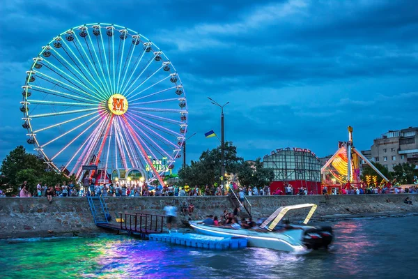

Бердя́нськ — місто в Україні, адміністративний центр Бердянської міської громади та Бердянського району на півдні Запорізької області, на північному узбережжі Азовського моря. Як місто засноване у 1836 році на місці козачих та рибальських поселень, які з'явилися тут у середині XVI століття. Перші поселенці — запорозькі козаки, які заснували на місці майбутнього міста форпост та поселення Запорізької Січі і займалися землеробством, рибальством, тваринництвом, бджільництвом
P.S. більше ви можете прочитати на Wikipedia
